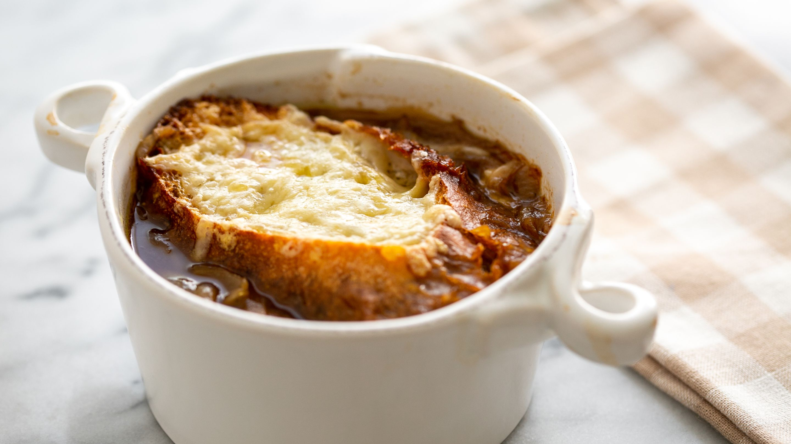

Fall French Onion Soup

Description
This is an awesome autumn twist on the traditional French Onion soup. Apple cider and brandy make it cody dish for those chilly fall afternoons
This variation requires little prior knowledge and experience to try your first attempt at the popular soup!
Ingredients
- 4 large onions, thinly sliced
- 2 Granny Smith apples - peeled, cored and chopped
- 1/2 cup butter, divided
- 2 tablespoons olive oil
- 4 cups chicken broth
- 1 1/2 cups apple cider
- 2 tablespoons brandy (Optional)
- 1 tablespoon ground cinnamon
- 1 tablespoon white sugar
- 1/2 cup shredded Gouda cheese
- 6 (1 inch thick) slices French bread
Steps
- Set a slow cooker on Low, and put in half of the butter to melt. Add the onions and apples; cover and cook on Low for 6 to 8 hours.
- After the cooking time is up and apples and onions are soft, pour in the brandy, chicken broth and apple cider. Set the slow cooker to High and cook for 1 to 2 hours, until simmering.
- Preheat the oven broiler. Mix together the cinnamon, sugar and remaining butter. Spread onto one side of each slice of bread. Place bread cinnamon side up on a baking sheet, and broil until toasted, about 3 minutes. Remove from the oven, flip the slices over so the cinnamon is on the bottom. Sprinkle Gouda cheese on the top and return to the broiler until the cheese is melted.
- Ladle soup into serving bowls and top with slices of toast, cheese side up to serve.